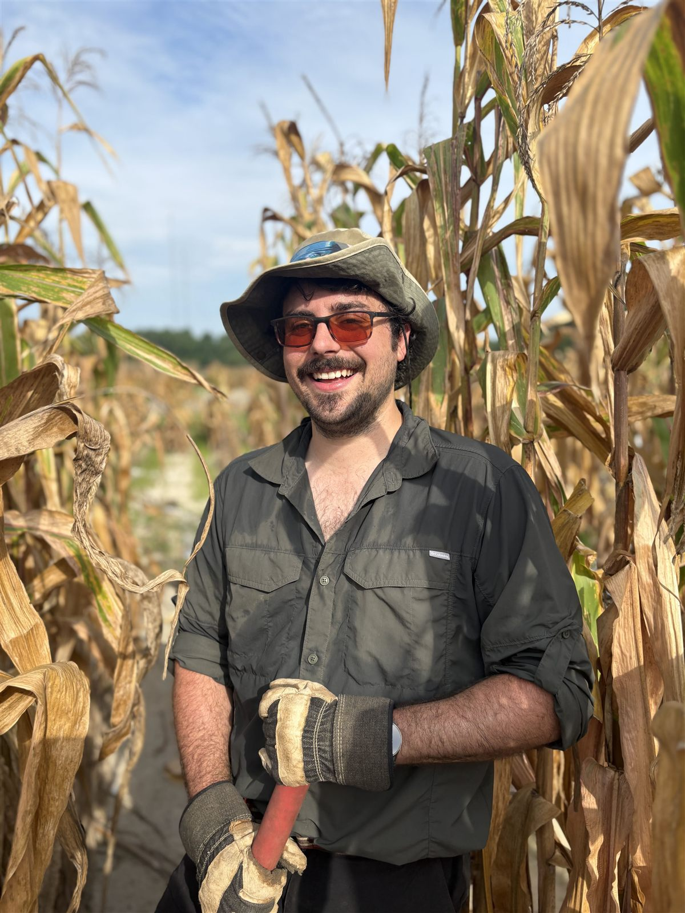

Hi, I'm Nate.
I'm a microbiome scientist. My path has taken me from the human gut to the soil and the microbes that live around plant roots.
I'm a USDA-NIFA Postdoctoral Fellow at North Carolina State University, where I study how plants, their environment, and plant-associated microbes interact. I work mainly in maize and sorghum fields, and my goal is to uncover how microbes help crops stay resilient to climate stress.
I'm always open to collaboration and open science, so please get in touch.
From the gut to the soil
My graduate research at the University of Nebraska–Lincoln looked at how diet shapes the human gut microbiome. We screened large, diverse populations of crops like sorghum, maize, and common bean for genes and molecules that feed beneficial gut microbes. That work taught me microbiome science, lab automation, bioinformatics, and quantitative genetics. It also put me in very different labs at once, which is where I learned to explain my science to people from other fields.
Near the end of my Ph.D., I decided to point my own research at the greatest threat facing humanity (in my opinion): climate change.
So I moved from the gut to the rhizosphere, the thin layer of soil around plant roots. Home to a diverse set of microbes that cycle nutrients, help plants tolerate heat and drought, and resist pathogen colonization. Crops that recruit the right microbial partners could hold their yields as the climate warms while needing less fertilizer, which means less nitrogen running off into rivers and less energy spent making it.
I joined Joe Gage's lab at NC State as its only microbiologist and built a research program from the ground up. Along the way I developed the GERMs framework, ran field trials (some that worked and some that didn't), and learned how to collect microbiome data in real agricultural fields.

Research interests
- Microbe-mediated mechanisms of heat stress
- Nutrient stress and nitrogen cycling in heirloom maize
- Conserved mechanisms of plant–microbiome regulation
Growing as a scientist
From 2019 to 2022 I was a Foundation for Food & Agriculture Research (FFAR) Fellow, which gave me room to work on professional skills as well as research. I focused on organization and prioritization, assertiveness, and communication, and those are where I grew the most. I keep working on them, and I bring that same attention to the students I mentor.